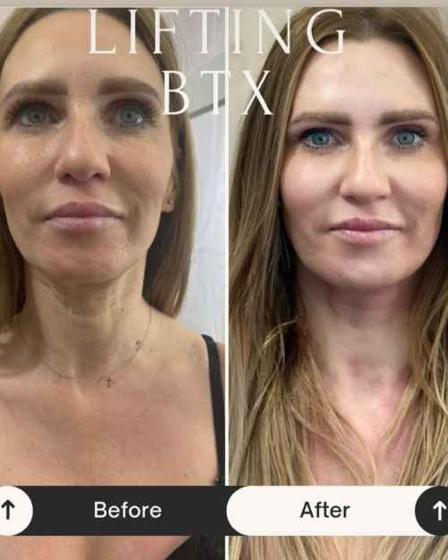
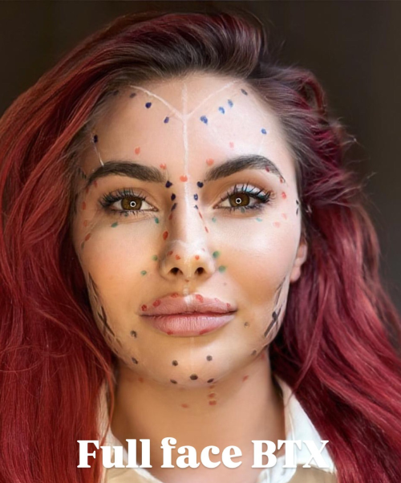

Botoks – jak działa i kiedy warto się na niego zdecydować?
Botoks, znany również jako toksyna botulinowa, od lat jest jednym z najpopularniejszych zabiegów medycyny estetycznej. Pomaga wygładzić zmarszczki, poprawić wygląd skóry i… odmłodzić twarz nawet o kilka lat – bez skalpela i długiej rekonwalescencji. Ale jak dokładnie działa botoks i kiedy naprawdę warto się na niego zdecydować?
Co to jest botoks i jak działa?
Botoks to potoczna nazwa toksyny botulinowej typu A – substancji, która tymczasowo blokuje przewodnictwo nerwowo-mięśniowe. Mówiąc prościej: botoks osłabia kurczenie się mięśni, które odpowiadają za powstawanie zmarszczek mimicznych, takich jak:
- „lwie zmarszczki” między brwiami,
- „kurze łapki” wokół oczu,
- poziome zmarszczki na czole.
Po wstrzyknięciu botoksu mięsień przestaje się kurczyć, a skóra nad nim staje się gładsza.
Kiedy warto zdecydować się na botoks?
Zabieg z użyciem toksyny botulinowej jest odpowiedni dla osób:
- z wyraźnymi zmarszczkami mimicznymi (szczególnie na czole i wokół oczu),
- które chcą zapobiec pogłębianiu się zmarszczek (botoks działa także profilaktycznie!),
- z problemem nadpotliwości (botoks skutecznie ogranicza pocenie się np. pach),
- z napięciem mięśni żwaczy (np. przy bruksizmie),
- cierpiących na migreny (botoks może pomóc w ich łagodzeniu – po konsultacji z lekarzem).

Ile trwa efekt botoksu?
- Pierwsze efekty widoczne są po 3–5 dniach od zabiegu.
- Pełny efekt pojawia się po około 10–14 dniach.
- Efekt utrzymuje się od 3 do 6 miesięcy, po czym można zabieg powtórzyć.
Przy regularnych zabiegach efekt może utrzymywać się dłużej, ponieważ mięśnie „uczą się” mniejszej aktywności.
Czy botoks to to samo co wypełniacze?
Nie! To częste nieporozumienie.
- Botoks rozluźnia mięśnie i redukuje zmarszczki mimiczne.
- Wypełniacze (np. kwas hialuronowy) dodają objętości – np. w ustach, policzkach, bruzdach nosowo-wargowych.
Oba zabiegi często są łączone w ramach pełnej terapii anti-aging, ale działają zupełnie inaczej.
Czy botoks jest bezpieczny?
Tak – pod warunkiem, że zabieg jest wykonany przez wykwalifikowanego specjalistę z użyciem oryginalnych, certyfikowanych preparatów.
Przeciwwskazania do botoksu:
- ciąża i karmienie piersią,
- choroby neurologiczne (np. miastenia),
- infekcje w miejscu iniekcji,
- alergia na składniki preparatu.

Jak wygląda zabieg i rekonwalescencja?
- Zabieg trwa ok. 10–20 minut.
- Odczucia są minimalne – przypomina to drobne ukłucia.
- Nie jest wymagane znieczulenie.
- Po zabiegu możesz wrócić do codziennych aktywności – ale unikaj wysiłku fizycznego, alkoholu i masowania twarzy przez 1–2 dni.
Czy po botoksie twarz wygląda „sztucznie”?
Tylko jeśli zabieg jest źle wykonany! Umiejętnie podany botoks:
- nie zmienia rysów twarzy,
- nie odbiera mimiki,
- po prostu wygładza zmarszczki i daje świeży, wypoczęty wygląd.
Naturalny efekt to zasługa dobrego specjalisty, który wie, jak dobrać odpowiednie dawki i miejsca iniekcji.
Podsumowanie:
Botoks to skuteczny, bezpieczny i szybki sposób na poprawę wyglądu twarzy i redukcję zmarszczek mimicznych. Zabieg trwa kilkanaście minut, a jego efekty możesz cieszyć się nawet przez pół roku. Jeśli zależy Ci na odświeżeniu wyglądu bez inwazyjnych metod – botoks może być idealnym rozwiązaniem.